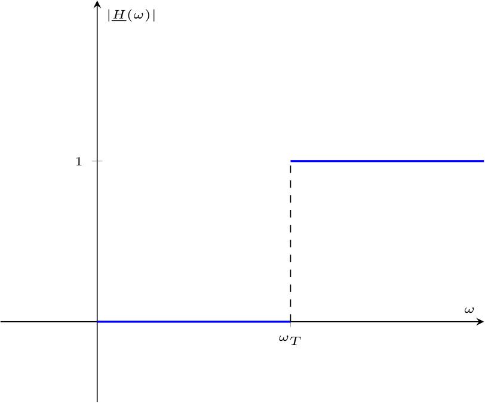
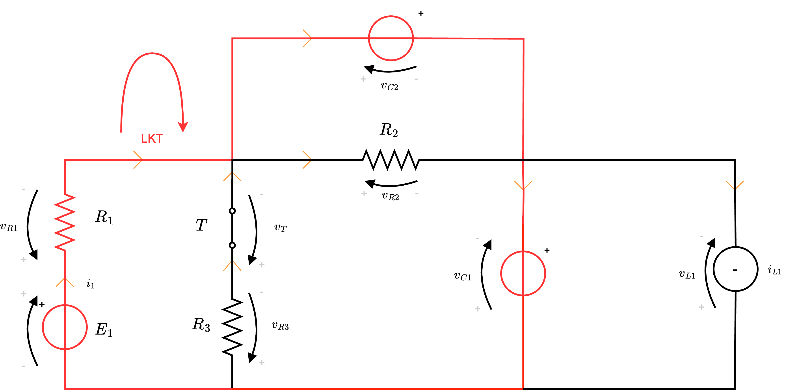

Definizione - Interruttore
Un interruttore è un componente che può cambiare ad un certo istante \( t\) la topologia del circuito.
Tale componente può essere sia aperto
Tale componente può essere sia aperto
rendendo il circuito aperto e imponendo quindi una corrente \( i = 0 \mathrm{ \, A }\), che chiuso
determinando una tensione \( v = 0 \mathrm{ \, V }\).
Definizione - Transitorio
Un transitorio è un cambio di stato energetico e può avvenire per:
- generatori variabili (ad esempio, generatori a gradino);
- guasti;
- interruttori.
Definizione - Circuiti RC
Dato un circuito RC (formato cioè da una Resistenza e un Condensatore), esso si presenta nel seguente modo  e otteniamo la seguente equazione \[ LKT: \quad E - v_R(t) - v_C(t) = 0 \] Considerando ora le equazioni costitutive dei componenti, ovvero \[ \left\{ \begin{array}{ccl} v_R(t) & = & R \cdot i(t) \\ i(t) & = & C \cdot \frac{\partial}{\partial t} v_C(t) \end{array} \right. \quad \implies \quad v_R = R \cdot C \cdot \frac{\partial}{\partial t} v_C(t) \] e, sostituendo, si ottiene \[ LKT: \quad E - R \cdot C \cdot \frac{\partial}{\partial t} v_C(t) - v_C(t) = 0 \] che, riordinata, diventa \[ LKT: \quad \frac{\partial}{\partial t} v_C(t) + \frac{1}{R \cdot C} \cdot v_C(t) = \frac{E}{R \cdot C} \] che è una equazione differenziale ordinaria a coefficienti costanti del primo ordine, che è possibile risolvere utilizzando il metodo di Cauchy.
e otteniamo la seguente equazione \[ LKT: \quad E - v_R(t) - v_C(t) = 0 \] Considerando ora le equazioni costitutive dei componenti, ovvero \[ \left\{ \begin{array}{ccl} v_R(t) & = & R \cdot i(t) \\ i(t) & = & C \cdot \frac{\partial}{\partial t} v_C(t) \end{array} \right. \quad \implies \quad v_R = R \cdot C \cdot \frac{\partial}{\partial t} v_C(t) \] e, sostituendo, si ottiene \[ LKT: \quad E - R \cdot C \cdot \frac{\partial}{\partial t} v_C(t) - v_C(t) = 0 \] che, riordinata, diventa \[ LKT: \quad \frac{\partial}{\partial t} v_C(t) + \frac{1}{R \cdot C} \cdot v_C(t) = \frac{E}{R \cdot C} \] che è una equazione differenziale ordinaria a coefficienti costanti del primo ordine, che è possibile risolvere utilizzando il metodo di Cauchy.
Considerando le ipotesi iniziali, cioè \[ v_C(t_0 = 0^-) = v_{C0} \] si ha che, dato che la tensione è una variabile di stato e che non può variare istantaneamente, vale \[ v_C(t_0 = 0^-) = v_C(t_1 = 0) = v_{C0} \] per cui si ha che sarà necessario risolvere \[ \left\{ \begin{array}{ccl} \frac{\partial}{\partial t} v_C(t) + \frac{1}{R \cdot C} \cdot v_C(t) & = & \frac{E}{R \cdot C} \\ v_C(0) & = & v_{C0} \end{array} \right. \] Seguendo il metodo di Cauchy, si ha che la soluzione di tale equazione differenziale è data dalla somma della soluzione dell'omogenea associata \( o(t)\) e dalla soluzione particolare \( p(t)\), cioè \[ v_C(t) = o(t) + p(t) \]
Al fine di calcolarle, consideriamo che \( B\) è una soluzione (anche se particolare) dell'equazione, per cui si ha che è possibile sostituirla all'equazione iniziale \[ \begin{array}{lccl} LKT \ \text{sol. particolare}: & \overbrace{\frac{\partial}{\partial t} B}^0 + \frac{1}{R \cdot C} \cdot B & = & \frac{E}{R \cdot C} \\ LKT \ \text{sol. particolare}: & \frac{B}{R \cdot C} & = & \frac{E}{R \cdot C} \\ LKT \ \text{sol. particolare}: & B & = & E \\ \end{array} \] Per calcolare \( A\), è invece possibile considerare che conosciamo il valore di \( v_C(0)\), ed è quindi possibile calcolare \[ \begin{array}{ccl} v_{C0} & = & v_C(0) \\ & = & A \cdot \mathrm{e}^{-\frac{0}{R \cdot C}} + E \\ & = & A + E \end{array} \] ovvero è necessario risolvere la seguente equazione in \( A\) \[ v_{C0} = A + E \qquad \implies \qquad A = v_{C0} - E \] per cui, si ha che la soluzione dell'equazione è \[ v_C(t) = (v_{C0} - E) \cdot \mathrm{e}^{-\frac{t}{R \cdot C}} + E \]
Si definisce infatti \[ v_C(t) = \underbrace{(v_{C0} - E) \cdot \mathrm{e}^{-\frac{t}{\tau}}}_{\text{Risp. transitoria}} + \underbrace{E}_{\text{Risp. a regime}} \] ovvero divisa in: In maniera analoga, è possibile vedere la funzione definita come \[ v_C(t) = \underbrace{v_{C0} \cdot \mathrm{e}^{-\frac{t}{\tau}}}_{\text{evoluzione libera}} + \underbrace{E \cdot \left( 1 - \mathrm{e}^{-\frac{t}{\tau}} \right)}_{\text{risposta forzata}} \]
In maniera analoga, è possibile vedere la funzione definita come \[ v_C(t) = \underbrace{v_{C0} \cdot \mathrm{e}^{-\frac{t}{\tau}}}_{\text{evoluzione libera}} + \underbrace{E \cdot \left( 1 - \mathrm{e}^{-\frac{t}{\tau}} \right)}_{\text{risposta forzata}} \]  Come è evidente dal grafico, la corrente varia istantaneamente partendo dal valore nullo (a causa del circuito aperto) per poi raggiungere il massimo istantaneamente per poi decrescere.
Come è evidente dal grafico, la corrente varia istantaneamente partendo dal valore nullo (a causa del circuito aperto) per poi raggiungere il massimo istantaneamente per poi decrescere.
consideriamo le seguenti ipotesi:
- il condensatore inizialmente ha una certa energia \( v_{C0}\), ovvero la tensione iniziale (all'istante \( t_0 = 0^-\)) del condensatore è uguale a \( v_{C0}\), cioè \[ v(t_0 = 0^-) = v_{C0} \]
- all'istante \( t_1 = 0\), l'interruttore T si chiude.
Tensione del circuito
Per risolvere questo circuito, consideriamo di applicare LKTConsiderando le ipotesi iniziali, cioè \[ v_C(t_0 = 0^-) = v_{C0} \] si ha che, dato che la tensione è una variabile di stato e che non può variare istantaneamente, vale \[ v_C(t_0 = 0^-) = v_C(t_1 = 0) = v_{C0} \] per cui si ha che sarà necessario risolvere \[ \left\{ \begin{array}{ccl} \frac{\partial}{\partial t} v_C(t) + \frac{1}{R \cdot C} \cdot v_C(t) & = & \frac{E}{R \cdot C} \\ v_C(0) & = & v_{C0} \end{array} \right. \] Seguendo il metodo di Cauchy, si ha che la soluzione di tale equazione differenziale è data dalla somma della soluzione dell'omogenea associata \( o(t)\) e dalla soluzione particolare \( p(t)\), cioè \[ v_C(t) = o(t) + p(t) \]
Calcolo della soluzione dell'omogenea associata
Al fine di calcolare \( o(t)\), si ha che è necessario risolvere l'equazione differenziale omogenea associata \[ \frac{\partial}{\partial t} v_C(t) + \frac{1}{R \cdot C} \cdot v_C(t) = 0 \] e, per farlo, consideriamo il polinomio caratteristico associato (dato dalle incognite dello stesso grado del grado di derivazione) \[ \lambda + \frac{1}{R \cdot C} = 0 \] e la sua soluzione \[ \lambda = -\frac{1}{R \cdot C} \] che ci porta alla soluzione \[ o(t) = A \cdot \mathrm{e}^{-\frac{t}{R \cdot C}} \]Calcolo della soluzione particolare
Al fine di calcolare la soluzione particolare \( p(t)\), si ha che è necessario considerare il termine noto dell'equazione \( b(t)\), uguale a \[ b(t) = \frac{E}{R \cdot C} \] che è una costante: si ha quindi che anche la soluzione particolare avrà la forma della costante, ovvero \[ b(t) = B \]Calcolo dei coefficienti
Fino ad ora, si è ottenuta la seguente soluzione \[ v_C(t) = A \cdot \mathrm{e}^{-\frac{t}{R \cdot C}} + B \] con incognite le costanti \( A\) e \( B\).Al fine di calcolarle, consideriamo che \( B\) è una soluzione (anche se particolare) dell'equazione, per cui si ha che è possibile sostituirla all'equazione iniziale \[ \begin{array}{lccl} LKT \ \text{sol. particolare}: & \overbrace{\frac{\partial}{\partial t} B}^0 + \frac{1}{R \cdot C} \cdot B & = & \frac{E}{R \cdot C} \\ LKT \ \text{sol. particolare}: & \frac{B}{R \cdot C} & = & \frac{E}{R \cdot C} \\ LKT \ \text{sol. particolare}: & B & = & E \\ \end{array} \] Per calcolare \( A\), è invece possibile considerare che conosciamo il valore di \( v_C(0)\), ed è quindi possibile calcolare \[ \begin{array}{ccl} v_{C0} & = & v_C(0) \\ & = & A \cdot \mathrm{e}^{-\frac{0}{R \cdot C}} + E \\ & = & A + E \end{array} \] ovvero è necessario risolvere la seguente equazione in \( A\) \[ v_{C0} = A + E \qquad \implies \qquad A = v_{C0} - E \] per cui, si ha che la soluzione dell'equazione è \[ v_C(t) = (v_{C0} - E) \cdot \mathrm{e}^{-\frac{t}{R \cdot C}} + E \]
Costante di tempo del sistema
È possibile definire la costante di tempo del sistema \( \tau\) (misurata in secondi \( \mathrm{ \, s }\)) che informa del tempo di risposta del circuito: \[ \tau = R \cdot C \] ed è quindi possibile riscrivere la funzione \( v_C(t)\) come \[ v_C(t) = (v_{C0} - E) \cdot \mathrm{e}^{-\frac{t}{\tau}} + E \]Interpretazione della funzione
È possibile interpretare in modi differenti la funzione.Si definisce infatti \[ v_C(t) = \underbrace{(v_{C0} - E) \cdot \mathrm{e}^{-\frac{t}{\tau}}}_{\text{Risp. transitoria}} + \underbrace{E}_{\text{Risp. a regime}} \] ovvero divisa in:
- risposta transitoria, che influenza la tensione durante il transitorio;
- risposta a regime, che indica la tensione presente una volta esaurito il transitorio.
Corrente del circuito
Una volta calcolata la tensione, è possibile calcolare anche la corrente del circuito. Considerando che sono componenti in serie, si ha che è possibile calcolarla considerando l'equazione costitutiva del condensatore, ovvero \[ \begin{array}{ccl} i_C(t) & = & C \cdot \frac{\partial}{\partial t} v_C(t) \\ & = & C \cdot \frac{\partial}{\partial t} \left[ (v_{C0} - E) \cdot \mathrm{e}^{-\frac{t}{R \cdot C}} + E \right] \\ & = & C \cdot (v_{C0} - E) \cdot \left( -\frac{1}{R \cdot C} \right) \cdot \mathrm{e}^{-\frac{t}{R \cdot C}} \\ & = & (v_{C0} - E) \cdot \left( -\frac{1}{R} \right) \cdot \mathrm{e}^{-\frac{t}{R \cdot C}} \\ & = & \frac{E - v_{C0}}{R} \cdot \mathrm{e}^{-\frac{t}{R \cdot C}} \end{array} \] che si grafica nel seguente modoDefinizione - Circuiti RL
Dato un circuito RL (formato cioè da una Resistenza e un Induttore), esso si presenta nel seguente modo
Considerando le ipotesi iniziali, cioè \[ i(t_0 = 0^-) = I_{L0} \] si ha che, dato che la corrente è una variabile di stato e che non può variare istantaneamente, vale \[ i(t_0 = 0^-) = i(t_1 = 0) = I_{L0} \] per cui si ha che sarà necessario risolvere \[ \left\{ \begin{array}{ccl} \frac{\partial}{\partial t} i(t) + \frac{R}{L} \cdot i(t) = \frac{E}{L} \\ i(0) & = & I_{L0} \end{array} \right. \] Seguendo il metodo di Cauchy, si ha che la soluzione di tale equazione differenziale è data dalla somma della soluzione dell'omogenea associata \( o(t)\) e dalla soluzione particolare \( p(t)\), cioè \[ v_C(t) = o(t) + p(t) \]
Al fine di calcolarle, consideriamo che \( B\) è una soluzione (anche se particolare) dell'equazione, per cui si ha che è possibile sostituirla all'equazione iniziale \[ \begin{array}{lccl} LKT \ \text{sol. particolare}: & \overbrace{\frac{\partial}{\partial t} B}^0 + \frac{R}{L} \cdot B & = & \frac{E}{L} \\ LKT \ \text{sol. particolare}: & \frac{R}{L} \cdot B & = & \frac{E}{L} \\ LKT \ \text{sol. particolare}: & R \cdot B & = & E \\ LKT \ \text{sol. particolare}: & B & = & \frac{E}{R} \end{array} \] Per calcolare \( A\), è invece possibile considerare che conosciamo il valore di \( i(0)\), ed è quindi possibile calcolare \[ \begin{array}{ccl} I_{L0} & = & i(0) \\ & = & A \cdot \mathrm{e}^{-\frac{R}{L} \cdot 0} + \frac{E}{R} \\ & = & A + \frac{E}{R} \end{array} \] ovvero è necessario risolvere la seguente equazione in \( A\) \[ I_{L0} = A + \frac{E}{R} \qquad \implies \qquad A = I_{L0} - \frac{E}{R} \] per cui, si ha che la soluzione dell'equazione è \[ i(t) = \left( I_{L0} - \frac{E}{R} \right) \cdot \mathrm{e}^{-\frac{R}{L} \cdot t} + \frac{E}{R} \]
Si definisce infatti \[ i(t) = \underbrace{\left( I_{L0} - \frac{E}{R} \right) \cdot \mathrm{e}^{-\frac{t}{\tau}}}_{\text{Risp. transitoria}} + \underbrace{\frac{E}{R}}_{\text{Risp. a regime}} \] ovvero divisa in: In maniera analoga, è possibile vedere la funzione definita come \[ i(t) = \underbrace{I_{L0} \cdot \mathrm{e}^{-\frac{t}{\tau}}}_{\text{evoluzione libera}} + \underbrace{E \cdot \left( 1 - \mathrm{e}^{-\frac{t}{\tau}} \right)}_{\text{risposta forzata}} \]
In maniera analoga, è possibile vedere la funzione definita come \[ i(t) = \underbrace{I_{L0} \cdot \mathrm{e}^{-\frac{t}{\tau}}}_{\text{evoluzione libera}} + \underbrace{E \cdot \left( 1 - \mathrm{e}^{-\frac{t}{\tau}} \right)}_{\text{risposta forzata}} \]  Come è evidente dal grafico, la tensione varia istantaneamente partendo dal valore nullo per poi raggiungere il massimo istantaneamente per poi decrescere.
Come è evidente dal grafico, la tensione varia istantaneamente partendo dal valore nullo per poi raggiungere il massimo istantaneamente per poi decrescere.
consideriamo le seguenti ipotesi:
- l'induttore inizialmente ha una certa energia \( I_{L0}\), ovvero la corrente iniziale (all'istante \( t_0 = 0^-\)) dell'induttore è uguale a \( I_{L0}\), cioè \[ i(t_0 = 0^-) = I_{L0} \]
- all'istante \( t_1 = 0\), il derivatore D si sposta in posizione 1.
Corrente del circuito
Per risolvere questo circuito, consideriamo di applicare LKT e otteniamo la seguente equazione \[ LKT: \quad E - v_R(t) - v_L(t) = 0 \] Considerando ora le equazioni costitutive dei componenti, ovvero \[ \left\{ \begin{array}{ccl} v_R(t) & = & R \cdot i(t) \\ v_L(t) & = & L \cdot \frac{\partial}{\partial t} i(t) \end{array} \right. \] e, sostituendo, si ottiene \[ LKT: \quad E - R \cdot i(t) - L \cdot \frac{\partial}{\partial t} i(t) = 0 \] che, riordinata, diventa \[ LKT: \quad \frac{\partial}{\partial t} i(t) + \frac{R}{L} \cdot i(t) = \frac{E}{L} \] che è una equazione differenziale ordinaria a coefficienti costanti del primo ordine, che è possibile risolvere utilizzando il metodo di Cauchy.
Considerando le ipotesi iniziali, cioè \[ i(t_0 = 0^-) = I_{L0} \] si ha che, dato che la corrente è una variabile di stato e che non può variare istantaneamente, vale \[ i(t_0 = 0^-) = i(t_1 = 0) = I_{L0} \] per cui si ha che sarà necessario risolvere \[ \left\{ \begin{array}{ccl} \frac{\partial}{\partial t} i(t) + \frac{R}{L} \cdot i(t) = \frac{E}{L} \\ i(0) & = & I_{L0} \end{array} \right. \] Seguendo il metodo di Cauchy, si ha che la soluzione di tale equazione differenziale è data dalla somma della soluzione dell'omogenea associata \( o(t)\) e dalla soluzione particolare \( p(t)\), cioè \[ v_C(t) = o(t) + p(t) \]
Calcolo della soluzione dell'omogenea associata
Al fine di calcolare \( o(t)\), si ha che è necessario risolvere l'equazione differenziale omogenea associata \[ \frac{\partial}{\partial t} i(t) + \frac{R}{L} \cdot i(t) = 0 \] e, per farlo, consideriamo il polinomio caratteristico associato (dato dalle incognite dello stesso grado del grado di derivazione) \[ \lambda + \frac{R}{L} = 0 \] e la sua soluzione \[ \lambda = -\frac{R}{L} \] che ci porta alla soluzione \[ o(t) = A \cdot \mathrm{e}^{-\frac{R}{L} \cdot t} \]Calcolo della soluzione particolare
Al fine di calcolare la soluzione particolare \( p(t)\), si ha che è necessario considerare il termine noto dell'equazione \( b(t)\), uguale a \[ b(t) = \frac{E}{L} \] che è una costante: si ha quindi che anche la soluzione particolare avrà la forma della costante, ovvero \[ b(t) = B \]Calcolo dei coefficienti
Fino ad ora, si è ottenuta la seguente soluzione \[ i(t) = A \cdot \mathrm{e}^{-\frac{R}{L} \cdot t} + B \] con incognite le costanti \( A\) e \( B\).Al fine di calcolarle, consideriamo che \( B\) è una soluzione (anche se particolare) dell'equazione, per cui si ha che è possibile sostituirla all'equazione iniziale \[ \begin{array}{lccl} LKT \ \text{sol. particolare}: & \overbrace{\frac{\partial}{\partial t} B}^0 + \frac{R}{L} \cdot B & = & \frac{E}{L} \\ LKT \ \text{sol. particolare}: & \frac{R}{L} \cdot B & = & \frac{E}{L} \\ LKT \ \text{sol. particolare}: & R \cdot B & = & E \\ LKT \ \text{sol. particolare}: & B & = & \frac{E}{R} \end{array} \] Per calcolare \( A\), è invece possibile considerare che conosciamo il valore di \( i(0)\), ed è quindi possibile calcolare \[ \begin{array}{ccl} I_{L0} & = & i(0) \\ & = & A \cdot \mathrm{e}^{-\frac{R}{L} \cdot 0} + \frac{E}{R} \\ & = & A + \frac{E}{R} \end{array} \] ovvero è necessario risolvere la seguente equazione in \( A\) \[ I_{L0} = A + \frac{E}{R} \qquad \implies \qquad A = I_{L0} - \frac{E}{R} \] per cui, si ha che la soluzione dell'equazione è \[ i(t) = \left( I_{L0} - \frac{E}{R} \right) \cdot \mathrm{e}^{-\frac{R}{L} \cdot t} + \frac{E}{R} \]
Costante di tempo del sistema
È possibile definire la costante di tempo del sistema \( \tau\) (misurata in secondi \( \mathrm{ \, s }\)) che informa del tempo di risposta del circuito: \[ \tau = \frac{L}{R} \] ed è quindi possibile riscrivere la funzione \( i(t)\) come \[ i(t) = \left( I_{L0} - \frac{E}{R} \right) \cdot \mathrm{e}^{-\frac{t}{\tau}} + \frac{E}{R} \]Interpretazione della funzione
È possibile interpretare in modi differenti la funzione.Si definisce infatti \[ i(t) = \underbrace{\left( I_{L0} - \frac{E}{R} \right) \cdot \mathrm{e}^{-\frac{t}{\tau}}}_{\text{Risp. transitoria}} + \underbrace{\frac{E}{R}}_{\text{Risp. a regime}} \] ovvero divisa in:
- risposta transitoria, che influenza la corrente durante il transitorio;
- risposta a regime, che indica la corrente presente una volta esaurito il transitorio.
Tensione del circuito
Una volta calcolata la corrente, è possibile calcolare anche la tensione ai capi dell'induttore. Considerando l'equazione costitutiva, ovvero \[ \begin{array}{ccl} v_L(t) & = & L \cdot \frac{\partial}{\partial t} i(t) \\ & = & L \cdot \frac{\partial}{\partial t} \left[ \left( I_{L0} - \frac{E}{R} \right) \cdot \mathrm{e}^{-\frac{R}{L} \cdot t} + \frac{E}{R} \right] \\ & = & L \cdot \left( I_{L0} - \frac{E}{R} \right) \cdot \left( -\frac{R}{L} \right) \cdot \mathrm{e}^{-\frac{R}{L} \cdot t} \\ & = & \left( I_{L0} - \frac{E}{R} \right) \cdot ( -R ) \cdot \mathrm{e}^{-\frac{R}{L} \cdot t} \\ & = & \left( E - R \cdot I_{L0} \right) \cdot \mathrm{e}^{-\frac{R}{L} \cdot t} \\ \end{array} \] che si grafica nel seguente modoDimostrazione - Struttura generica di varabili di stato
Data la proposizione
Enunciato:
Considerando un circuito RC o RL, è possibile calcolare la funzione variabile di stato come \[ x(t) = (x_0 - x_\infty) \cdot \mathrm{e}^{-\frac{t}{\tau}} + x_\infty \] dove:
- \( x_0\) è la condizione iniziale dell'energia;
- \( x_\infty\) è la risposta a regime (uguale a \( E\) se è un circuito RC ed \( \frac{E}{R}\) se è un circuito RL);
- \( \tau\) è la costante di tempo del sistema (uguale a \( R \cdot C\) per circuiti RC ed \( \frac{L}{R}\) per circuiti RL).
Dimostrazione:
Considerando le equazioni differenziali relative ai circuiti RC \[ \frac{\partial}{\partial t} v_C(t) + \frac{1}{R \cdot C} \cdot v_C(t) = \frac{E}{R \cdot C} \] e \[ \frac{\partial}{\partial t} i(t) + \frac{R}{L} \cdot i(t) = \frac{E}{L} \] e sostituendo con \( \tau\) le relative costanti di tempo è possibile ricondursi all'equazione differenziale \[ \frac{\partial}{\partial t} x(t) + \frac{i(t)}{\tau} = x_F \] dove \( x_F\) è detto valore "forzante", dovuto al generatore.
Consideriamo inoltre il valore di energia iniziale come \( x_0\).
Si ha quindi che è necessario risolvere la seguente equazione differenziale \[ \left\{ \begin{array}{l} \frac{\partial}{\partial t} x(t) + \frac{i(t)}{\tau} = x_F \\ x(t = 0^-) = x(t = 0) = x_0 \end{array} \right. \] Si sa inoltre che le equazioni differenziali di questo tipo hanno soluzioni del tipo \[ \begin{array}{ccl} x(t) & = & o(t) + p(t) \\ & = & x_T(t) + x_\infty \end{array} \] In particolare, si ha che la soluzione \( o(t)\) è uguale a \[ o(t) = A \cdot \mathrm{e}^{-\frac{t}{\tau}} \] e che, al fine di calcolare il valore del coefficiente \( A\) è sufficiente considerare le condizioni iniziali, ovvero \[ \begin{array}{ccl} x_0 & = & x(0) \\ & = & A \cdot \mathrm{e}^{-\frac{0}{\tau}} + x_\infty \\ & = & A + x_\infty \end{array} \] ovvero è sufficiente risolvere l'equazione \[ x_0 = A + x_\infty \qquad \implies \qquad A = x_0 - x_\infty \] e, quindi, è possibile dire che \( x(t)\) è uguale a \[ x(t) = (x_0 - x_\infty) \cdot \mathrm{e}^{-\frac{t}{\tau}} + x_\infty \]
Consideriamo inoltre il valore di energia iniziale come \( x_0\).
Si ha quindi che è necessario risolvere la seguente equazione differenziale \[ \left\{ \begin{array}{l} \frac{\partial}{\partial t} x(t) + \frac{i(t)}{\tau} = x_F \\ x(t = 0^-) = x(t = 0) = x_0 \end{array} \right. \] Si sa inoltre che le equazioni differenziali di questo tipo hanno soluzioni del tipo \[ \begin{array}{ccl} x(t) & = & o(t) + p(t) \\ & = & x_T(t) + x_\infty \end{array} \] In particolare, si ha che la soluzione \( o(t)\) è uguale a \[ o(t) = A \cdot \mathrm{e}^{-\frac{t}{\tau}} \] e che, al fine di calcolare il valore del coefficiente \( A\) è sufficiente considerare le condizioni iniziali, ovvero \[ \begin{array}{ccl} x_0 & = & x(0) \\ & = & A \cdot \mathrm{e}^{-\frac{0}{\tau}} + x_\infty \\ & = & A + x_\infty \end{array} \] ovvero è sufficiente risolvere l'equazione \[ x_0 = A + x_\infty \qquad \implies \qquad A = x_0 - x_\infty \] e, quindi, è possibile dire che \( x(t)\) è uguale a \[ x(t) = (x_0 - x_\infty) \cdot \mathrm{e}^{-\frac{t}{\tau}} + x_\infty \]
Definizione - Circuiti RLC (in serie)
Dato un circuito RLC (formato cioè da una Resistenza , un Induttore e un Condensatore), esso si presenta nel seguente modo  e otteniamo la seguente equazione \[ LKT: \quad E - v_R(t) - v_L(t) - v_C(t) = 0 \] Considerando ora le equazioni costitutive dei componenti, ovvero \[ \left\{ \begin{array}{ccl} v_R(t) & = & R \cdot i(t) \\ v_L(t) & = & L \cdot \frac{\partial}{\partial t}i(t) \\ i(t) & = & C \cdot \frac{\partial}{\partial t}v_C(t) \end{array} \right. \qquad \implies \qquad \left\{ \begin{array}{ccl} v_R(t) & = & R \cdot i(t) \\ v_L(t) & = & L \cdot \frac{\partial}{\partial t}i(t) \\ \int i(t) \ dt & = & C \cdot v_C(t) \end{array} \right. \] e quindi è possibile ottenere le seguenti possibili sostituzioni \[ \left\{ \begin{array}{ccl} v_R(t) & = & R \cdot i(t) \\ v_L(t) & = & L \cdot \frac{\partial}{\partial t}i(t) \\ v_C(t) & = & \frac{1}{C} \cdot \int i(t) \ dt \end{array} \right. \] e, sostituendo, si ottiene \[ LKT: \quad E - R \cdot i(t) - L \cdot \frac{\partial}{\partial t}i(t) - \frac{1}{C} \cdot \int i(t) \ dt = 0 \] che, derivando, si ottiene \[ LKT: \quad - R \cdot \frac{\partial}{\partial t} i(t) - L \cdot \frac{\partial^2}{\partial t}i(t) - \frac{1}{C} \cdot i(t) = 0 \] e, riordinando \[ LKT: \quad \frac{\partial^2}{\partial t} i(t) + \frac{R}{L} \cdot \frac{\partial}{\partial t} i(t) + \frac{1}{L \cdot C} \cdot i(t) = 0 \] che è un'equazione differenziale ordinaria omogenea a coefficienti costanti del primo ordine, che è possibile risolvere utilizzando il metodo di Cauchy.
e otteniamo la seguente equazione \[ LKT: \quad E - v_R(t) - v_L(t) - v_C(t) = 0 \] Considerando ora le equazioni costitutive dei componenti, ovvero \[ \left\{ \begin{array}{ccl} v_R(t) & = & R \cdot i(t) \\ v_L(t) & = & L \cdot \frac{\partial}{\partial t}i(t) \\ i(t) & = & C \cdot \frac{\partial}{\partial t}v_C(t) \end{array} \right. \qquad \implies \qquad \left\{ \begin{array}{ccl} v_R(t) & = & R \cdot i(t) \\ v_L(t) & = & L \cdot \frac{\partial}{\partial t}i(t) \\ \int i(t) \ dt & = & C \cdot v_C(t) \end{array} \right. \] e quindi è possibile ottenere le seguenti possibili sostituzioni \[ \left\{ \begin{array}{ccl} v_R(t) & = & R \cdot i(t) \\ v_L(t) & = & L \cdot \frac{\partial}{\partial t}i(t) \\ v_C(t) & = & \frac{1}{C} \cdot \int i(t) \ dt \end{array} \right. \] e, sostituendo, si ottiene \[ LKT: \quad E - R \cdot i(t) - L \cdot \frac{\partial}{\partial t}i(t) - \frac{1}{C} \cdot \int i(t) \ dt = 0 \] che, derivando, si ottiene \[ LKT: \quad - R \cdot \frac{\partial}{\partial t} i(t) - L \cdot \frac{\partial^2}{\partial t}i(t) - \frac{1}{C} \cdot i(t) = 0 \] e, riordinando \[ LKT: \quad \frac{\partial^2}{\partial t} i(t) + \frac{R}{L} \cdot \frac{\partial}{\partial t} i(t) + \frac{1}{L \cdot C} \cdot i(t) = 0 \] che è un'equazione differenziale ordinaria omogenea a coefficienti costanti del primo ordine, che è possibile risolvere utilizzando il metodo di Cauchy.
Considerando le ipotesi iniziali e il fatto che corrente e tensione sono variabili di stato, cioè \[ v_C(t_0 = 0^-) = v_C(t_1 = 0) = v_{C0} \] e \[ i(t_0 = 0^-) = i(t_1 = 0) = 0 \] per cui si ha che sarà necessario risolvere \[ \left\{ \begin{array}{l} \frac{\partial^2}{\partial t} i(t) + \frac{R}{L} \cdot \frac{\partial}{\partial t} i(t) + \frac{1}{L \cdot C} \cdot i(t) = 0 \\ v_C(0) = v_{C0} \\ i(0) = 0 \end{array} \right. \]
consideriamo le seguenti ipotesi:
- il condensatore inizialmente ha una certa energia \( v_{C0}\), ovvero la tensione iniziale (all'istante \( t_0 = 0^-\)) del condensatore è uguale a \( v_{C0}\), cioè \[ v(t_0 = 0^-) = v_{C0} \]
- all'istante \( t_1 = 0\), l'interruttore T si chiude.
- la corrente che scorre inizialmente nel circuito è \( 0 \mathrm{ \, A }\), dato che il circuito è aperto, cioè \[ i(t_0 = 0^-) = 0 \mathrm{ \, A } \]
Corrente del circuito
Per risolvere questo circuito, consideriamo di applicare LKTConsiderando le ipotesi iniziali e il fatto che corrente e tensione sono variabili di stato, cioè \[ v_C(t_0 = 0^-) = v_C(t_1 = 0) = v_{C0} \] e \[ i(t_0 = 0^-) = i(t_1 = 0) = 0 \] per cui si ha che sarà necessario risolvere \[ \left\{ \begin{array}{l} \frac{\partial^2}{\partial t} i(t) + \frac{R}{L} \cdot \frac{\partial}{\partial t} i(t) + \frac{1}{L \cdot C} \cdot i(t) = 0 \\ v_C(0) = v_{C0} \\ i(0) = 0 \end{array} \right. \]
Risoluzione dell'equazione
Al fine di calcolare la soluzione, consideriamo il polinomio caratteristico associato (dato dalle incognite dello stesso grado del grado di derivazione) \[ \lambda^2 + \frac{R}{L} \cdot \lambda + \frac{1}{L \cdot C} = 0 \] che ha come soluzioni \[ \begin{array}{ccl} \lambda_{1, 2} & = & \frac{-\frac{R}{L} \pm \sqrt{\left( \frac{R}{L} \right)^2 - \frac{4}{L \cdot C}}}{2} \\ & = & -\frac{R}{2 \cdot L} \pm \frac{1}{2} \cdot \sqrt{\left( \frac{R}{L} \right)^2 - \frac{4}{L \cdot C}} \\ & = & -\frac{R}{2 \cdot L} \pm \frac{1}{2} \cdot \sqrt{\frac{1}{4} \cdot \left( \frac{R}{L} \right)^2 - \frac{4}{4 \cdot L \cdot C}} \\ & = & -\frac{R}{2 \cdot L} \pm \frac{1}{2} \cdot \sqrt{ \left( \frac{R}{2 \cdot L} \right)^2 - \frac{1}{L \cdot C}} \end{array} \] Definiamo quindi- il coefficiente di smorzamento \( \alpha\) uguale a \[ \alpha = \frac{R}{2 \cdot L} \]
- la pulsazione di risonanza \( (\omega_0)^2\) uguale a \[ (\omega_0)^2 = \frac{1}{L \cdot C} \]
Definizione - Circuiti RLC, caso \( \Delta \gt 0\) (risposta sovrasmorzata)
Nel caso in cui \( \Delta \gt 0\), che implicherebbe \( \alpha \gt \omega_0\) si hanno soluzioni reali distinte che si combinano nel seguente modo \[ i(t) = A \cdot \mathrm{e}^{\lambda_1 \cdot t} + B \cdot \mathrm{e}^{\lambda_2 \cdot t} \] e per calcolare i coefficienti consideriamo che conosciamo il valore di \( i(0)\) ed è quindi possibile calcolare \[ \begin{array}{ccl} 0 & = & i(0) \\ & = & A \cdot \mathrm{e}^{\lambda_1 \cdot 0} + B \cdot \mathrm{e}^{\lambda_2 \cdot 0} \\ & = & A + B \end{array} \] che implica quindi \[ A = -B \] Considerando ora che conosciamo il valore di \( v_C(0)\) e il fatto che \( v_C(t)\) è uguale a \[ E - v_R(t) - v_L(t) - v_C(t) = 0 \qquad \implies \qquad v_C(t) = E - v_R(t) - v_L(t) \] è quindi possibile ricavare il valore di \( \frac{\partial}{\partial t} i(0)\) \[ \begin{array}{ccl} v_{C0} & = & v_C(0) \\ & = & E - v_R(0) - v_L(0) \\ & = & E - R \cdot i(0) - L \cdot \frac{\partial}{\partial t} i(0) \\ & = & E - L \cdot \frac{\partial}{\partial t} i(0) \end{array} \] risolvendo l'equazione \[ v_{C0} = E - L \cdot \frac{\partial}{\partial t} i(0) \qquad \implies \qquad \frac{\partial}{\partial t} i(0) = \frac{E - v_{C0}}{L} \] Derivando quindi la soluzione generica di \( i(t)\) si otterrebbe \[ \begin{array}{ccl} \frac{E - v_{C0}}{L} & = & \frac{\partial}{\partial t} i(0) \\ & = & \frac{\partial}{\partial t} \left[ A \cdot \mathrm{e}^{\lambda_1 \cdot t} + B \cdot \mathrm{e}^{\lambda_2 \cdot t} \right]_0 \\ & = & \left[ A \cdot \lambda_1 \cdot \mathrm{e}^{\lambda_1 \cdot t} + B \cdot \lambda_2 \cdot \mathrm{e}^{\lambda_2 \cdot t} \right]_0 \\ & = & A \cdot \lambda_1 \cdot \mathrm{e}^{\lambda_1 \cdot 0} + B \cdot \lambda_2 \cdot \mathrm{e}^{\lambda_2 \cdot 0} \\ & = & A \cdot \lambda_1 + B \cdot \lambda_2 \end{array} \] e risolvendo tale equazione \begin{aligned} & \frac{E - v_{C0}}{L} = A \cdot \lambda_1 + B \cdot \lambda_2 & \overset{B = -A}{\iff} \\ & \frac{E - v_{C0}}{L} = A \cdot \lambda_1 - A \cdot \lambda_2 & \iff \\ & \frac{E - v_{C0}}{L} = A \cdot (\lambda_1 - \lambda_2) & \iff \\ & \frac{E - v_{C0}}{L \cdot (\lambda_1 - \lambda_2)} = A & \iff \end{aligned} Si ha quindi che la corrente è uguale a \[ \begin{array}{ccl} i(t) & = & \frac{E - v_{C0}}{L \cdot (\lambda_1 - \lambda_2)} \cdot \mathrm{e}^{\lambda_1 \cdot t} - \frac{E - v_{C0}}{L \cdot (\lambda_1 - \lambda_2)} \cdot \mathrm{e}^{\lambda_2 \cdot t} \\ & = & \frac{E - v_{C0}}{L \cdot (\lambda_1 - \lambda_2)} \cdot \left( \mathrm{e}^{\lambda_1 \cdot t} - \mathrm{e}^{\lambda_2 \cdot t} \right) \\ & \overset{\text{sost.} \ \lambda_{1,2}}{=} & \frac{E - v_{C0}}{2 \cdot L \cdot \sqrt{\alpha^2 - (\omega_0)^2}} \cdot \left( \mathrm{e}^{\left(-\alpha + \sqrt{\alpha^2 - (\omega_0)^2}\right) \cdot t} - \mathrm{e}^{\left(-\alpha - \sqrt{\alpha^2 - (\omega_0)^2}\right) \cdot t} \right) \\ & = & \frac{E - v_{C0}}{2 \cdot L \cdot \sqrt{\alpha^2 - (\omega_0)^2}} \cdot \left( \mathrm{e}^{\sqrt{\alpha^2 - (\omega_0)^2} \cdot t} - \mathrm{e}^{-\sqrt{\alpha^2 - (\omega_0)^2} \cdot t} \right) \cdot \mathrm{e}^{-\alpha \cdot t} \end{array} \] che si grafica nel seguente modo  In questo caso si ha una risposta sottosmorzata.
In questo caso si ha una risposta sottosmorzata.
Definizione - Circuiti RLC, caso \( \Delta = 0\) (smorzamento critico)
Nel caso in cui \( \Delta = 0\), che implicherebbe \( \alpha = \omega_0\) si hanno soluzioni reali coincidenti che si combinano nel seguente modo \[ i(t) = A \cdot \mathrm{e}^{\lambda \cdot t} + B \cdot t \cdot \mathrm{e}^{\lambda \cdot t} \] e per calcolare i coefficienti consideriamo che conosciamo il valore di \( i(0)\) ed è quindi possibile calcolare \[ \begin{array}{ccl} 0 & = & i(0) \\ & = & A \cdot \mathrm{e}^{\lambda \cdot 0} + B \cdot 0 \cdot \mathrm{e}^{\lambda_2 \cdot 0} \\ & = & A \end{array} \] che implica quindi \[ A = 0 \] Considerando ora che conosciamo il valore di \( v_C(0)\) e il fatto che \( v_C(t)\) è uguale a \[ E - v_R(t) - v_L(t) - v_C(t) = 0 \qquad \implies \qquad v_C(t) = E - v_R(t) - v_L(t) \] è quindi possibile ricavare il valore di \( \frac{\partial}{\partial t} i(0)\) \[ \begin{array}{ccl} v_{C0} & = & v_C(0) \\ & = & E - v_R(0) - v_L(0) \\ & = & E - R \cdot i(0) - L \cdot \frac{\partial}{\partial t} i(0) \\ & = & E - L \cdot \frac{\partial}{\partial t} i(0) \end{array} \] risolvendo l'equazione \[ v_{C0} = E - L \cdot \frac{\partial}{\partial t} i(0) \qquad \implies \qquad \frac{\partial}{\partial t} i(0) = \frac{E - v_{C0}}{L} \] Derivando quindi la soluzione generica di \( i(t)\) si otterrebbe \[ \begin{array}{ccl} \frac{E - v_{C0}}{L} & = & \frac{\partial}{\partial t} i(0) \\ & = & \frac{\partial}{\partial t} \left[ A \cdot \mathrm{e}^{\lambda \cdot t} + B \cdot t \cdot \mathrm{e}^{\lambda \cdot t} \right]_0 \\ & \overset{A = 0}{=} & \frac{\partial}{\partial t} \left[ B \cdot t \cdot \mathrm{e}^{\lambda \cdot t} \right]_0 \\ & = & \left[ B \cdot t \cdot \lambda \cdot \mathrm{e}^{\lambda \cdot t} + B \cdot \mathrm{e}^{\lambda \cdot t} \right]_0 \\ & = & B \cdot 0 \cdot \lambda \cdot \mathrm{e}^{\lambda \cdot 0} + B \cdot \mathrm{e}^{\lambda \cdot 0} \\ & = & B \end{array} \] ovvero \[ B = \frac{E - v_{C0}}{L} \] Si ha quindi che la corrente è uguale a \[ \begin{array}{ccl} i(t) & = & 0 \cdot \mathrm{e}^{\lambda \cdot t} + \frac{E - v_{C0}}{L} \cdot t \cdot \mathrm{e}^{\lambda \cdot t} \\ & = & \frac{E - v_{C0}}{L} \cdot t \cdot \mathrm{e}^{\lambda \cdot t} \end{array} \] che si grafica nel seguente modo  In questo caso, si ha smorzamento critico.
In questo caso, si ha smorzamento critico.
Definizione - Circuiti RLC, caso \( \Delta \lt 0\) (risposta sottosmorzata)
Nel caso in cui \( \Delta \lt 0\), che implicherebbe \( \alpha \lt \omega_0\) si hanno soluzioni complesse coniugate, infatti le soluzioni sono uguali a \[ \begin{array}{ccl} \lambda_{1,2} & = & -\alpha \pm \sqrt{\alpha^2 - (\omega_0)^2} \\ & = & -\alpha \pm \sqrt{-1 \cdot \left((\omega_0)^2 - \alpha^2 \right)} \\ & \overset{\jmath = \sqrt{-1}}{=} & -\alpha \pm \jmath \cdot \sqrt{(\omega_0)^2 - \alpha^2} \end{array} \] Definendo ora \( \omega_D\) come \[ \omega_D = \sqrt{(\omega_0)^2 - \alpha^2} \] si ha che è possibile ottenere le due soluzioni come \[ \begin{array}{ccl} \lambda_1 & = & -\alpha + \jmath \cdot \omega_D \\ \lambda_2 & = & -\alpha - \jmath \cdot \omega_D \end{array} \] Queste due soluzioni, dovrebbero combinarsi nella forma \[ i(t) = A \cdot \mathrm{e}^{\lambda_1 \cdot t} + B \cdot \mathrm{e}^{\lambda_2 \cdot t} \] Si conosce già, tuttavia, il valore di \( A\) e \( B\) dal caso \( \Delta \gt 0\): vale infatti \[ \begin{array}{ccl} A & = & \frac{E - v_{C0}}{L \cdot (\lambda_1 - \lambda_2)} \\ B & = & -\frac{E - v_{C0}}{L \cdot (\lambda_1 - \lambda_2)} \\ \end{array} \] e, sostituendo le soluzioni con il risultato ottenuto, si ottengono i coefficienti \[ \begin{array}{ccl} A & = & \frac{E - v_{C0}}{L \cdot 2 \cdot \jmath \cdot \omega_D} \\ B & = & -\frac{E - v_{C0}}{L \cdot 2 \cdot \jmath \cdot \omega_D} \\ \end{array} \] ottenendo quindi che la corrente è uguale a \[ \begin{array}{ccl} i(t) & = & \frac{E - v_{C0}}{L \cdot 2 \cdot \jmath \cdot \omega_D} \cdot \mathrm{e}^{(-\alpha + \jmath \cdot \omega_D) \cdot t} - \frac{E - v_{C0}}{L \cdot 2 \cdot \jmath \cdot \omega_D} \cdot \mathrm{e}^{(-\alpha - \jmath \cdot \omega_D) \cdot t} \\ & = & \frac{E - v_{C0}}{L \cdot 2 \cdot \jmath \cdot \omega_D} \cdot \left( \mathrm{e}^{(-\alpha + \jmath \cdot \omega_D) \cdot t} - \mathrm{e}^{(-\alpha - \jmath \cdot \omega_D) \cdot t} \right) \\ & = & \frac{E - v_{C0}}{L \cdot 2 \cdot \jmath \cdot \omega_D} \cdot \left( \mathrm{e}^{\jmath \cdot \omega_D \cdot t} - \mathrm{e}^{- \jmath \cdot \omega_D \cdot t} \right) \cdot \mathrm{e}^{-\alpha \cdot t} \end{array} \] Ricordando ora la rappresentazione polare di un numero complesso, secondo cui \[ \mathrm{e}^{\jmath \cdot \theta} = \cos\left( \theta \right) + \jmath \cdot \sin\left( \theta \right) \] si ottiene \[ \begin{array}{ccl} i(t) & = & \frac{E - v_{C0}}{L \cdot 2 \cdot \jmath \cdot \omega_D} \cdot \left( \mathrm{e}^{\jmath \cdot \omega_D \cdot t} - \mathrm{e}^{- \jmath \cdot \omega_D \cdot t} \right) \cdot \mathrm{e}^{-\alpha \cdot t} \\ & = & \frac{E - v_{C0}}{L \cdot 2 \cdot \jmath \cdot \omega_D} \cdot \left( \cos\left( \omega_D \cdot t \right) + \jmath \cdot \sin(\omega_D \cdot t) - \cos\left( \omega_D \cdot t \right) + \jmath \cdot \sin(\omega_D \cdot t) \right) \cdot \mathrm{e}^{-\alpha \cdot t} \\ & = & \frac{E - v_{C0}}{L \cdot 2 \cdot \jmath \cdot \omega_D} \cdot \left( 2 \cdot \jmath \cdot \sin(\omega_D \cdot t) \right) \cdot \mathrm{e}^{-\alpha \cdot t} \\ & = & \frac{E - v_{C0}}{L \cdot \omega_D} \cdot \sin(\omega_D \cdot t) \cdot \mathrm{e}^{-\alpha \cdot t} \\ \end{array} \] che si grafica nel seguente modo In questo caso, si ha una risposta sottosmorzata.

Definizione - Comportamento a regime di condensatori e induttori
Considerando circuiti composti da componenti dinamici, si ha che contribuiscono a causare transitori.
Quando ciò non avviene, ovvero il circuito è a regime, questi componenti "modificano" la struttura del circuito. Si ha infatti che la variabile di stato, in questo caso, non subisce variazioni durante il tempo, ovvero (considerando \( x(t)\) la variabile di stato) \[ \frac{\partial}{\partial t} x(t) = 0 \]

Quando ciò non avviene, ovvero il circuito è a regime, questi componenti "modificano" la struttura del circuito. Si ha infatti che la variabile di stato, in questo caso, non subisce variazioni durante il tempo, ovvero (considerando \( x(t)\) la variabile di stato) \[ \frac{\partial}{\partial t} x(t) = 0 \]
Comportamento a regime di condensatori
Considerando un condensatore, la cui equazione costitutiva è \[ i(t) = C \cdot \frac{\partial}{\partial t} v(t) \] si ha che a regime non vi è variazione di tensione \[ \frac{\partial}{\partial t} v(t) = 0 \] per cui la corrente è nulla \[ i(t) = C \cdot \overbrace{\frac{\partial}{\partial t} v(t)}^0 \qquad \implies \qquad i(t) = 0 \] e quindi il comportamento è equivalente ad un circuito apertoComportamento a regime di induttori
Considerando un induttore, la cui equazione costitutiva è \[ v_C(t) = L \cdot \frac{\partial}{\partial t} i(t) \] si ha che a regime non vi è variazione di corrente \[ \frac{\partial}{\partial t} i(t) = 0 \] per cui la tensione è nulla \[ v_C(t) = L \cdot \overbrace{\frac{\partial}{\partial t} i(t)}^0 \qquad \implies \qquad i(t) = 0 \] e quindi il comportamento è equivalente ad un cortocircuitoDefinizione - Metodo di risoluzione per ispezione
Una possibile strategia risolutiva per i circuiti caratterizzati da transitori, è utilizzare il metodo per ispezione che permette di conoscere il comportamento di corrente e tensione solo per alcuni istanti, ignorando il comportamento tenuto durante il transitorio.
In particolare, in circuiti di ordine superiore al primo, si ha che sono caratterizzati da equazioni differenziali particolarmente complesse da risolvere. Quindi, dato un circuito caratterizzato dall'inizio di un transitorio all'istante \( t_0 = 0\) (dovuto, ad esempio, alla presenza di un interruttore \( T\) che modifica il suo stato), è possibile considerare solo alcuni istanti.
In particolare, in circuiti di ordine superiore al primo, si ha che sono caratterizzati da equazioni differenziali particolarmente complesse da risolvere. Quindi, dato un circuito caratterizzato dall'inizio di un transitorio all'istante \( t_0 = 0\) (dovuto, ad esempio, alla presenza di un interruttore \( T\) che modifica il suo stato), è possibile considerare solo alcuni istanti.
Istante \( t_{0^-} = 0^-\)
Primo istante da tenere in considerazione è \( t_{0^-} = 0^-\), in cui si considera il circuite a regime (ovvero è possibile sostituire condensatori e induttori con circuiti aperti e cortocircuiti) e la topologia del circuito non è influenzata dall'evento che scatenerà il transitorio all'istante \( t_0\) (ad esempio, se all'istante \( t_0\) l'interruttore \( T\) si chiuderebbe, allora si considera l'interruttore aperto).Istante \( t_{0^+} = 0^+\)
È poi possibile considerare l'istante \( t_{0^+} = 0^+\), in cui ha inizio il vero e proprio transitorio. In questo caso, la topologia "ha già subito" gli effetti dell'evento scatenante. Considerando però i componenti dinamici, si ha che le variabili di stato assumono lo stesso valore che avevano all'istante \( t_{0^-}\), per cui:- nel caso di condensatori, si ha che vale \[ v_C(t_{0^-}) = v_C(t_{0^+}) = v_{C0} \] e, per questo motivo, è possibile sostituirli con un generatore di tensione dello stesso valore Da notare che è mantenuta la convenzione dell'utilizzatore.
- nel caso di induttori, si ha che vale \[ i(t_{0^-}) = i(t_{0^+}) = I_{L0} \] e, per questo motivo, è possibile sostituirli con un generatore di corrente dello stesso valore Da notare che è mantenuta la convenzione dell'utilizzatore.
Istante \( t_{\infty} = +\infty\)
Infine, è possibile considerare l'istante \( t_{\infty} = +\infty\), in cui il circuito è a regime (ed è possibile effettuare le relative sostituzioni). In questo caso, si ha che la topologia del circuito è influenzata dall'evento dell'istante \( t_0\).Esempio - Risoluzione di un circuito con il metodo dell'ispezione
Considerando il circuito  e considerando che all'istante \( t_0 = 0\) l'interruttore \( T\) si chiude, calcolare:
e considerando che all'istante \( t_0 = 0\) l'interruttore \( T\) si chiude, calcolare:  A questo punto, oltre a calcolare i valori richiesti per l'istante \( t_{0^-}\), può essere utile calcolare tutti i valori delle variabili di stato, dato che potrebbero essere utili per l'istante \( t_{0^+}\): infatti, per le variabili di stato, si ha che \( x(t_{0^-}) = x(t_{0^+})\).
A questo punto, oltre a calcolare i valori richiesti per l'istante \( t_{0^-}\), può essere utile calcolare tutti i valori delle variabili di stato, dato che potrebbero essere utili per l'istante \( t_{0^+}\): infatti, per le variabili di stato, si ha che \( x(t_{0^-}) = x(t_{0^+})\).
Quindi, otteniamo che e, semplificandolo, si ottiene
e, semplificandolo, si ottiene  Dato ciò, consideriamo che
Dato ciò, consideriamo che
- l'energia del condensatore \( C_2\) all'istante \( t_{0^-}\), ovvero \( w_{C2}(t_{0^-})\);
- la variazione della corrente sull'induttore \( L_1\) all'istante \( t_{0^+}\), ovvero \( \frac{\partial}{\partial t} i_L(t_{0^+})\);
- la potenza del generatore di tensione \( E_1\) all'istante \( t_{0^+}\), ovvero \( P_{E1}(t_{0^+})\);
- l'energia del condensatore \( C_1\) a regime, ovvero \( w_{C1}(\infty)\);
- l'energia del condensatore \( C_2\) a regime, ovvero \( w_{C2}(\infty)\);
- l'energia dell'induttore \( L_1\) a regime, ovvero \( w_{L1}(\infty)\).
Circuito orientato
Al fine calcolare tutti i valori richiesti, si ha che è utile orientare il circuitoIstante \( t_{0^-}\)
Considerando l'istante \( t_{0^-}\), si ha che il circuito si presenta nel seguente modo e, semplificandolo, si ottiene il seguente circuito
Quindi, otteniamo che
- la tensione \( v_{C1}(t_{0^-})\) è nulla (dato che è un cortocircuito), per cui \[ v_{C1}(t_{0^-}) = 0 \mathrm{ \, V } \]
- la corrente \( i_{L1}(t)\) è la stessa per tutto il circuito ed è uguale a \[ i_{L1}(t_{0^-}) = \frac{E_1}{R_1 + R_2} \] dato che la resistenza equivalente del circuito è l'equivalente alla serie delle due resistenze;
- la tensione \( v_{C2}(t_{0^-})\) è uguale alla tensione ai capi di \( R_2\), per cui data l'equazione costitutiva si ottiene \[ \begin{array}{ccl} v_{C2}(t_{0^-}) & = & v_{R2}(t_{0^-}) \\ & = & R \cdot i(t_{0^-}) \\ & = & R_2 \cdot i_L(t_{0^-}) \\ & = & R_2 \cdot \frac{E_1}{R_1 + R_2} \\ \end{array} \]
Istante \( t_{0^+}\)
Considerando l'istante \( t_{0^+}\), si ha che il circuito si presenta nel seguente modo e
- per calcolare \( \frac{\partial}{\partial t} i_L(t_{0^+})\) è possibile considerare l'equazione costitutiva di \( L_1\), ovvero \[ v_{L1}(t_{0^+}) = L \cdot \frac{\partial}{\partial t} i_L(t_{0^+}) \qquad \implies \qquad \frac{\partial}{\partial t} i_L(t_{0^+}) = \frac{v_{L1}(t_{0^+})}{L} \] Per conoscere \( v_{L1}(t_{0^+})\) è ora possibile applicare LKT da cui è possibile calcolare \[ LKT: \quad v_{C1} - v_{L1} = 0 \qquad \implies \qquad v_{C1} = v_{L1} = 0 \mathrm{ \, V } \] e, dato che \( v_{C1}(t_{0^-}) = 0 \mathrm{ \, V }\) ed è una variabile di stato (ndr, proprio perchè la tensione dell'induttore non è una variabile di stato non la si è calcolata a \( t_{0^-}\)), si ha che \[ \begin{array}{ccl} \frac{\partial}{\partial t} i_L(t_{0^+}) & = & \frac{v_{L1}(t_{0^+})}{L} \\ & = & 0 \frac{\mathrm{ \, A }}{\mathrm{ \, S }} \end{array} \]

- per calcolare \( P_{E1}(t_{0^+})\) si ha che occorre calcolare \( i_1(t_{0^+})\) \[ P_{E1}(t_{0^+}) = E_1 \cdot i_1(t_{0^+}) \] e, per farlo, consideriamo di applicare LKT alla seguente maglia (ndr, scelta per convenienza dato che conosciamo già tutti i valori delle tensioni e \( R_1\) ha la stessa corrente di \( E_1\)) ottenendo \[ LKT: \quad E_1 - \overbrace{v_{R1}}^{R_1 \cdot i_1} - v_{C2} - v_{C1} = 0 \qquad \implies \qquad i_1 = \frac{v_{C2} + v_{C1} - E_1}{-R_1} \] e, ricordando che \( v_{C1} = 0 \mathrm{ \, V }\), si ha che \[ i_1 = \frac{E_1 - v_{C2}}{R_1} \] si ha che \( P_{E1}\) è uguale a \[ P_{E1} = E_1 \cdot \frac{E_1 - v_{C2}}{R_1} \]
Istante \( t_\infty\)
Considerando il circuito a regime (ovvero all'istante \( t_\infty\)), si ha che si presenta nel seguente modo- per calcolare \( w_{C1}(t_\infty)\) consideriamo che \( v_{C1}(\infty) = 0 \mathrm{ \, V }\) (dato che è un cortocircuito) e quindi \[ \begin{array}{ccl} w_{C1}(t_\infty) & = & \frac{1}{2} \cdot C_1 \cdot \overbrace{\left( v_{C1}(t_\infty) \right)^2}^{0 \mathrm{ \, V }} \\ & = & 0 \mathrm{ \, V } \end{array} \]
- per calcolare \( w_{L1}(t_\infty)\) si utilizza la formula \[ w_{L1}(\infty) = \frac{1}{2} \cdot L_1 \cdot \left( i_L(t_\infty) \right)^2 \] Occorre quindi calcolare la corrente \( i_L(t_\infty)\): è possibile utilizzare la formula del ripartitore di corrente ottenendo \[ \begin{array}{ccl} i_{L1}(t_\infty) & = & \frac{R_{eq}}{R_2} \cdot i_1(t_\infty) \\ & = & \frac{R_2 \ // \ R_3}{R_2} \cdot \frac{E_1}{R_1} \\ & = & \frac{\frac{R_2 \cdot R_3}{R_2 + R_3}}{R_2} \cdot \frac{E_1}{R_1} \\ & = & \frac{R_3}{R_2 + R_3} \cdot \frac{E_1}{R_1} \end{array} \] da cui \[ \begin{array}{ccl} w_{L1}(\infty) & = & \frac{1}{2} \cdot L_1 \cdot \left( i_L(t_\infty) \right)^2 \\ & = & \frac{1}{2} \cdot L_1 \cdot \left( \frac{R_3}{R_2 + R_3} \cdot \frac{E_1}{R_1} \right)^2 \end{array} \]
- per calcolare \( w_{C2}(\infty)\) si utilizza la formula \[ w_{C2}(\infty) = \frac{1}{2} \cdot C_2 \cdot \left( v_{C2}(t_\infty) \right)^2 \] Occorre quindi calcolare \( v_{C2}(\infty)\) che è uguale a \( v_{R2}(\infty)\) ed è quindi uguale a \[ \begin{array}{ccl} v_{C2}(\infty) & = & v_{R2}(\infty) \\ & = & R_2 \cdot i_{L1}(\infty) \\ & = & R_2 \cdot \left( \frac{R_3}{R_2 + R_3} \cdot \frac{E_1}{R_1} \right) \end{array} \]